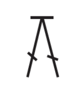

Microcrochet Lauchpad
Microcrochet Stiches
Warning: This tutorial involes knowledge of basic crochet stiches and how to read patterns.
| Crochet Chart Symbols | |||
|---|---|---|---|
| Symbol | Stitch | 中文 | English |
| s,sl,st | 引拔针 | slip stitch | |
| ch | 锁针 | chain | |
| FLO | 外半针（Q），前半针 | front loops only | |
| BLO | 后半针（H），外半针 | Back loops only | |
| sc | 短针 | single crochet | |
| hdc | 中长针 | half double crochet | |
| dc | 长针 | double crochet | |
| tr | 长长针 | treble crochet | |
| dtr | 三卷长针 | double treble crochet | |
| sc2tog | 长针加针 | Single Crochet 2 Together | |
| sc3tog | 3长针在同一针目 | Single Crochet 3 together | |
|  | dc2tog | 2卷长针减针 | Double Crochet 2 together |
 |
dc3tog | 枣形针 | double crochet 3 together |
These are some of the most basic symbols and diagrams in crochet. In crochet, pattern stitch charts are increasingly used as a supplement or the very basis of the crochet item. Below are the standardized crochet symbols adopted by members of the Craft Yarn Council. These stiches will be extremely useful later on to add details and create your project.